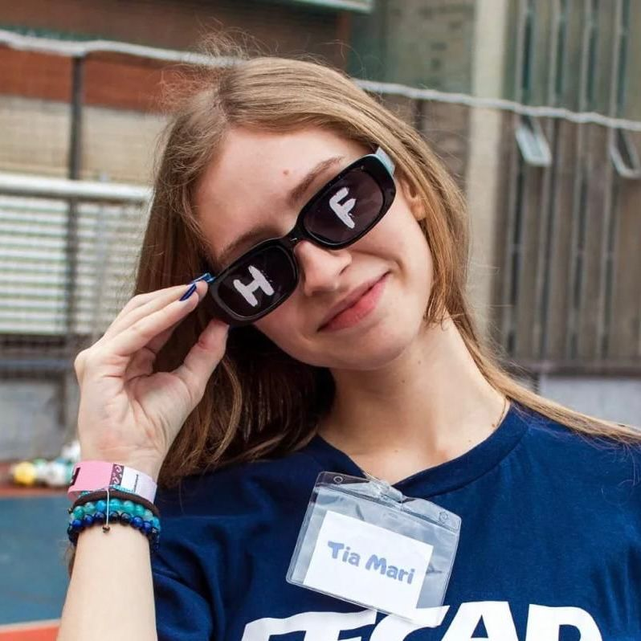
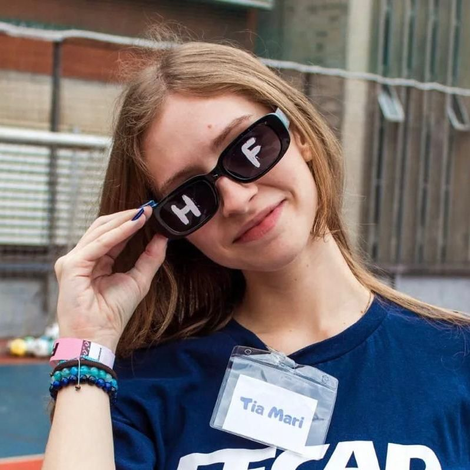
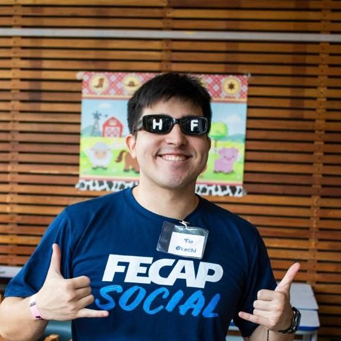
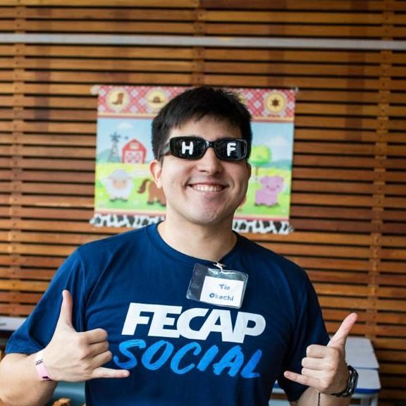
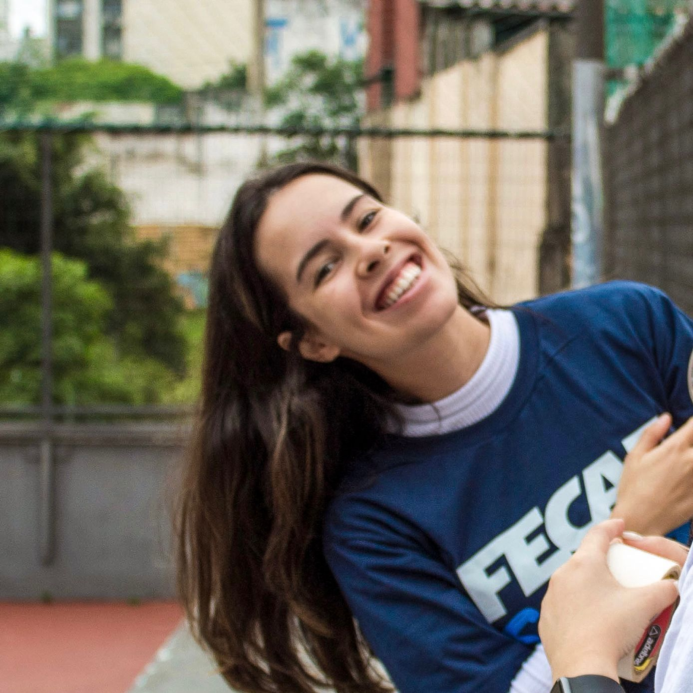
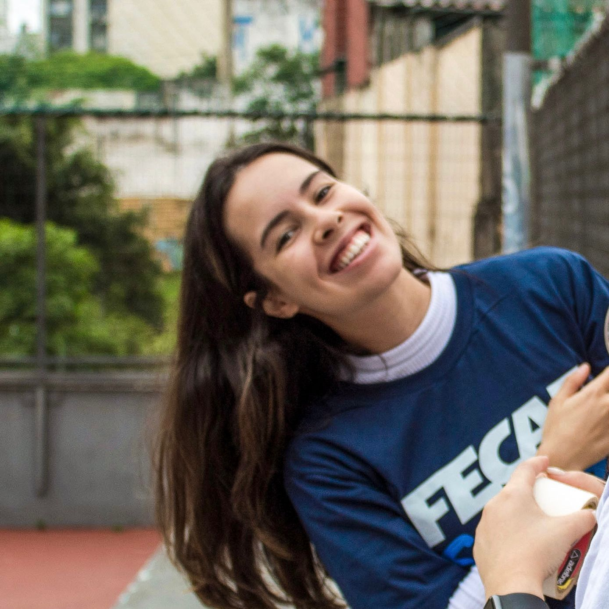

Quem somos?
A FECAP Social é uma organização estudantil da Fundação Escola de Comércio Álvares Penteado (FECAP), formada por alunos de graduação dos cursos da instituição, onde são divididos nas áreas de
-
Comunicação
-
Financeiro
-
Projetos
Possuimos um portfólio com ações, que são realizadas durante o ano letivo, buscando oferecer assistência a causas de vulnerabilidade social, que envolvem Crianças e Adolescentes, Idosos, Mulheres, Moradores de Rua, Comunidade LGBTQI+, Comunidade Negra e outros.
Nossos principais projetos <3
Nossa história
Inicialmente nomeada como FECAP Solidária, a FECAP Social surgiu em junho de 2016, a partir da iniciativa de 4 integrantes do Coletivo Célula da FECAP. A primeira ação ocorreu em parceira com a Alegria no Caos, com a entrega de marmitas e sopas na região do Teatro Municipal. A partir de então, o time cresceu e foram definidas áreas, que contavam com Comunicação, Desenvolvimento Institucional, Financeiro e Projetos. Atualmente a entidade conta com 3 áreas, sendo elas Comunicação, Financeiro e Projetos e 18 integrantes.

 

 



 
